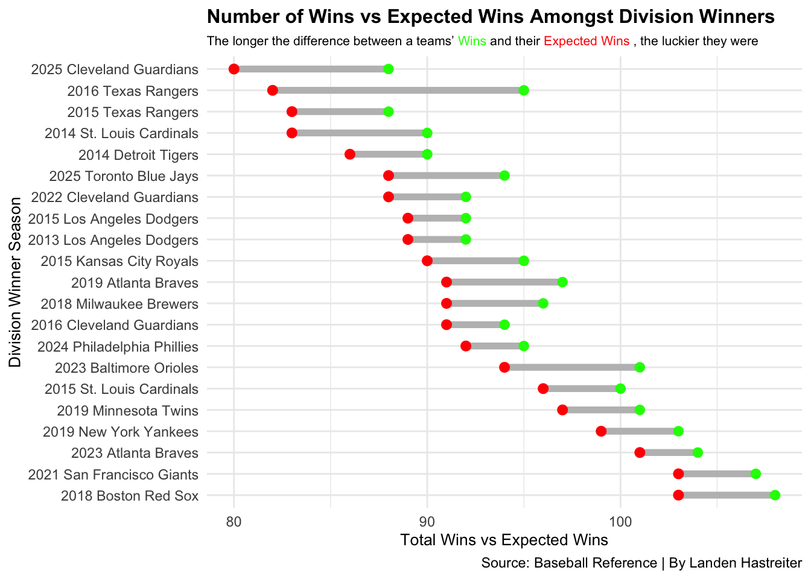
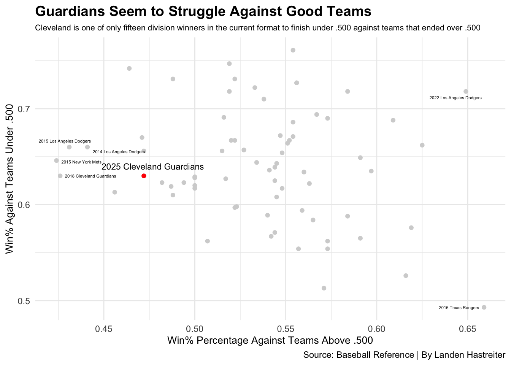
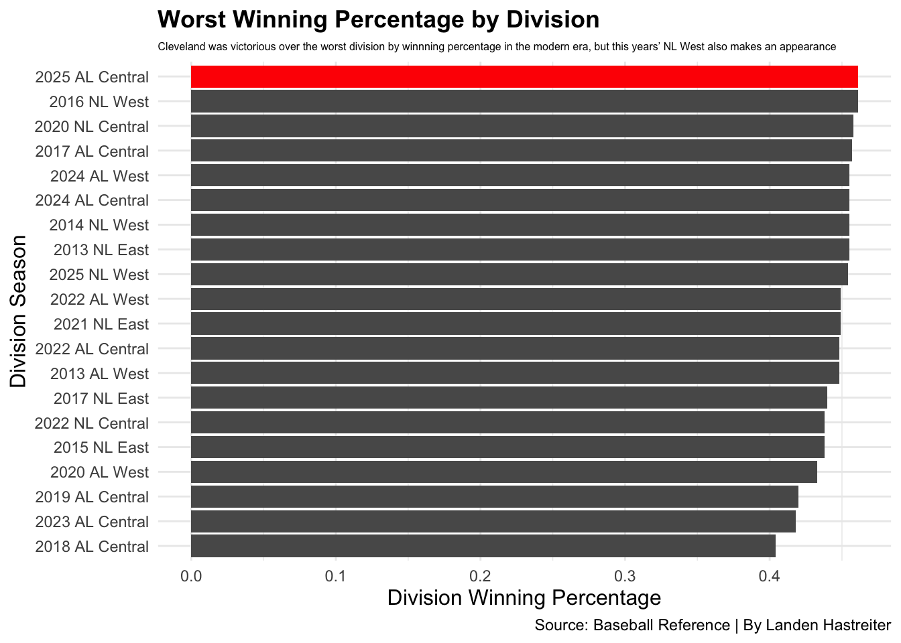
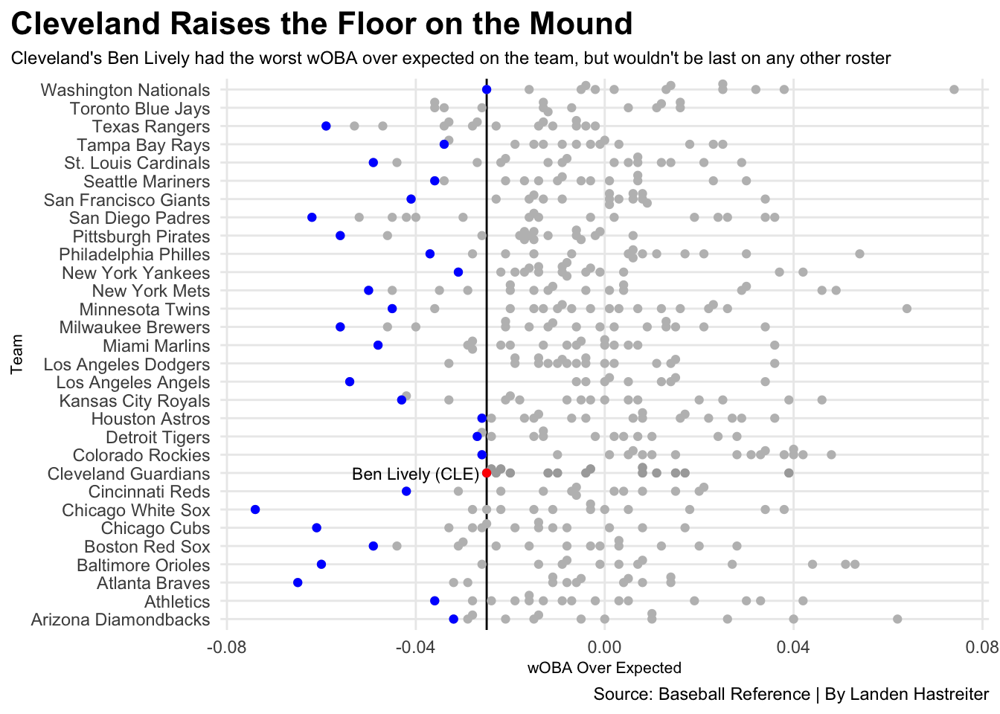

Were the 2025 Cleveland Guardians The Luckiest Division Winners Ever?
cleveland
guardians
mlb
Author
Landen Hastreiter
Published
November 16, 2025
The Cleveland Guardians shocked the baseball world last season, coming from 15.5 games down in mid-July to win the American League Central, a deficit that had never been overcome in the history of Major League Baseball. They finished the month of September with a 20-7 record, surpassing the Detroit Tigers during the final week of the season.
But even with this amazing end to the season, the Guardians only won their division by a single game. With Detroit being the final team to make the playoffs due to their tiebreaker win over the Astros, which the Guardians also held, Cleveland only made the playoffs by two games. This begs the question: In a game in which so much can be decided on one pitch or one swing, did the Guardians just simply get lucky?
And thus, how lucky were they? Were they possibly the luckiest division winner ever?
Let’s look at the stats to determine just that.
Sports Reference’s Major League Baseball site creates a statistical “Luck” value. Sports Reference takes a team’s run differential and determines what their record should be, and compares it to what their record actually was. Essentially, this gives a good view of how lucky or unlucky a team was.
Finding the luckiest division winner since Major League Baseball was founded in 1876 is nearly impossible, due to teams switching divisions and even, at some points, uneven number of teams per division. The last change in divisions came between the 2012 and 2013 seasons, when the Houston Astros left the National League Central to join the American League West.
This left five teams in each division, so we will start there (excluding 2020, due to COVID shortening the season).
Clearly, the first question to ask is, which division winners benefitted the most from Luck? Here are the top 20 luckiest division winners.
Code
library(tidyverse)library(ggalt)library(ggtext)library(gt)library(ggbeeswarm)library(ggrepel)mlb <-read_csv("https://docs.google.com/spreadsheets/d/e/2PACX-1vQmpETjsJGA8mrzSp03UJFBBCrsZeXvSTDI7_tY112Kh9ITTWOzmlA_DjPnK6PjADe_uYD6S5wLmzJS/pub?gid=1937133345&single=true&output=csv")covid <- mlb |>filter(Year >2020| Year <2020)divisionwinners <- covid |>filter(DivisionRank =="1")luckiestteams <- divisionwinners |>top_n(20, wt=Luck)ggplot() +geom_dumbbell(data=luckiestteams, aes(y=reorder(TeamSzn, -pythW), x=W, xend=pythW),size =2,colour ="grey",colour_x ="green",colour_xend ="red") +labs(x="Total Wins vs Expected Wins", y="Division Winner Season", title="Number of Wins vs Expected Wins Amongst Division Winners", subtitle ="The longer the difference between a teams' <span style = 'color:green;'>Wins</span> and their <span style = 'color:red;'>Expected Wins</span> , the luckier they were",caption="Source: Baseball Reference | By Landen Hastreiter" ) +theme(plot.subtitle =element_textbox_simple()) +theme_minimal() +theme(plot.title =element_text(size =12, face ="bold"),plot.subtitle =element_markdown(size =8),axis.title =element_text(size =10))
Warning: Using the `size` aesthetic with geom_segment was deprecated in ggplot2 3.4.0.
ℹ Please use the `linewidth` aesthetic instead.

Cleveland may not have the most Luck in a single season by a division winner, but they are the division winner with the lowest expected wins, the only team who was expected to finish under .500.
But to be a good team, you have to compete with other good teams. So how does Cleveland stack up there?
Code
cleveland <- divisionwinners |>filter(TeamSzn =="2025 Cleveland Guardians")goodteams <- divisionwinners |>filter(`Win%≥.500`>0.63)badteams <- divisionwinners |>filter(`Win%≥.500`<0.45)ggplot() +geom_point(data=divisionwinners, aes(x=`Win%≥.500`, y=`Win%<.500`), color="lightgrey")+geom_point(data=cleveland, aes(x=`Win%≥.500`, y=`Win%<.500`), color="red") +geom_point(data=goodteams, aes(x=`Win%≥.500`, y=`Win%<.500`), color="darkgrey") +geom_text_repel(data = cleveland,aes(x =0.47, y = (`Win%<.500`+0.002), label = TeamSzn), size=3) +geom_text_repel(data = goodteams,aes(x =`Win%≥.500`, y =`Win%<.500`, label = TeamSzn), size=1.5) +geom_text_repel(data = badteams,aes(x =`Win%≥.500`, y =`Win%<.500`, label = TeamSzn), size=1.5) +labs(x="Win% Percentage Against Teams Above .500", y="Win% Against Teams Under .500", title="Guardians Seem to Struggle Against Good Teams", subtitle ="Cleveland is one of only fifteen division winners in the current format to finish under .500 against teams that ended over .500",caption="Source: Baseball Reference | By Landen Hastreiter" ) +theme(plot.subtitle =element_textbox_simple()) +theme_minimal() +theme(plot.title =element_text(size =14, face ="bold"),plot.subtitle =element_markdown(size =8),axis.title =element_text(size =10))

Cleveland doesn’t have the worst win percentage against teams at .500 or better, but they are absolutely in the bottom 10. This could be due to a lack of games against good teams. But how would we know who has played more good teams than their peers? A win against a 2-0 team in March that ends up with a record 60-102 counts towards the win percentage, but that team isn’t considered “good”.
One way to look at how many quality opponents a team faces in a given season, a start would be looking at how the MLB creates their schedule, and how many times each team plays each other. The most games for each team are against their division, with 52 of the 162 total games being played against the other four teams, 13 each.
As a result of this, we can take a look at the winning percentage of the teams in each division that didn’t finish first. We eliminate the division winners from this data because if a team wins their division by large number of games, their winning percentage can inflate the division’s win percentage as a whole. Here are the bottom 20 division winning percentages in our time frame.
Code
divisionstats <-read_csv("https://docs.google.com/spreadsheets/d/e/2PACX-1vQmpETjsJGA8mrzSp03UJFBBCrsZeXvSTDI7_tY112Kh9ITTWOzmlA_DjPnK6PjADe_uYD6S5wLmzJS/pub?gid=1915124800&single=true&output=csv")topdivisions <- divisionstats |>top_n(20, wt=(-DivisionWinLoss))central <- topdivisions |>filter( Division =="2025 AL Central" )ggplot() +geom_bar(data=topdivisions, aes(x=reorder(Division, DivisionWinLoss), weight=DivisionWinLoss)) +geom_bar(data=central, aes(x=reorder(Division, DivisionWinLoss), weight=DivisionWinLoss), fill="red") +coord_flip() +labs(x="Division Season", y="Division Winning Percentage", title="Worst Winning Percentage by Division", subtitle ="Cleveland was victorious over the worst division by winnning percentage in the modern era, but this years' NL West also makes an appearance",caption="Source: Baseball Reference | By Landen Hastreiter" ) +theme(plot.subtitle =element_textbox_simple()) +theme_minimal() +theme(plot.title =element_text(size =13.5, face ="bold"),plot.subtitle =element_markdown(size =6),axis.title =element_text(size =12))

The 2025 American League Central and 2016 National League West are tied for the worst division winning percentage of the last 13 years. It isn’t surprising that this is the case, as only one other team from the Central finished above .500, and that team finished just a single game back of the Guardians. But it does raise another question: Was it just luck that willed Cleveland to a division win?
To determine this, we can first look at the team hitting stats from this last season. A team that absolutely crushes the baseball can afford to be a weaker pitching team.
Two common baseball stats that Sports Reference uses are On-Base Percentage and Slugging Percentage. If you add these two values together, you get On-Base Plus Slugging, or OPS.
Another stat used is OPS+. OPS+ shows how good a team’s OPS was against league average. It is measured with a base of 100 being exactly league average. Anything more than 100 is above average, and subsequently anything less than 100 is below league average.
To determine how good Cleveland was last year at the plate, we can take a look at each team’s OPS, and OPS+.
Code
thisseason <- mlb |>filter(Year =="2025")teamops <- thisseason |>select(TeamSzn, OPS, `OPS+`) |>arrange((OPS))teamops |>gt() |>cols_label(OPS ="OPS", `OPS+`="OPS+") |>tab_header(title ="Did The Guardians Hit Their Way To A Title?",subtitle ="Cleveland posted the worst batting average by a division winner in the modern era" ) |>tab_style(style =cell_text(color ="black", weight ="bold", align ="left"),locations =cells_title("title") ) |>tab_style(style =cell_text(color ="black", align ="left"),locations =cells_title("subtitle") ) |>tab_source_note(source_note =md("**By:** Landen Hastreiter | **Source:** Baseball Reference") ) |>tab_style(locations =cells_column_labels(columns =everything()),style =list(cell_borders(sides ="bottom", weight =px(3)),cell_text(weight ="bold", size=12) ) ) |>opt_row_striping() |>opt_table_lines("none") |>tab_style(style =list(cell_fill(color ="red"),cell_text(color ="white") ),locations =cells_body(rows = TeamSzn =="2025 Cleveland Guardians") )
Did The Guardians Hit Their Way To A Title?
Cleveland posted the worst batting average by a division winner in the modern era
Being 29th out of 30 in total OPS and 28th in OPS+, it is clear that Cleveland wasn’t getting their production done at the plate. That doesn’t mean it was just sheer will and luck that got the Guardians to the top of the AL Central. We can also look at pitching stats to determine if their defending was the reason for their success.
With each team having five to six starting pitchers on roster that begin games on the mound during a given week, that would be a good place to start.
So what about looking at those starting pitchers? Where does Cleveland rank when it comes to expected Allowed On-Base Percentage (wOBA)?
Code
pitchers <-read_csv("https://docs.google.com/spreadsheets/d/e/2PACX-1vQmpETjsJGA8mrzSp03UJFBBCrsZeXvSTDI7_tY112Kh9ITTWOzmlA_DjPnK6PjADe_uYD6S5wLmzJS/pub?gid=1455997034&single=true&output=csv")qualified <- pitchers %>%group_by(Team) %>%arrange(desc(wOBADiff.)) %>%slice(n()) %>%filter(PA >161) %>%ungroup() %>%arrange(desc(PA))guardians <- qualified |>filter(Team =="Cleveland Guardians")land <- pitchers |>filter(Team =="Cleveland Guardians")set.seed(1234)ggplot() +geom_vline(xintercept =-0.025) +geom_beeswarm(data=pitchers, groupOnX=FALSE, aes(x=wOBADiff., y=Team), color="grey") +geom_beeswarm(data=qualified, groupOnX=FALSE, aes(x=wOBADiff., y=Team), color="blue") +geom_beeswarm(data=land, groupOnX=FALSE, aes(x=wOBADiff., y=Team), color="darkgrey") +geom_beeswarm(data=guardians, groupOnX=FALSE, aes(x=wOBADiff., y=Team), color="red") +geom_text(aes(x=-0.04, y="Cleveland Guardians", label="Ben Lively (CLE)"), size=3) +labs(x="wOBA Over Expected", y="Team", title="Cleveland Raises the Floor on the Mound", subtitle="Cleveland's Ben Lively had the worst wOBA over expected on the team, but wouldn't be last on any other roster", caption="Source: Baseball Reference | By Landen Hastreiter") +theme_minimal() +theme(plot.title =element_text(size =16, face ="bold"),axis.title =element_text(size =8), plot.subtitle =element_text(size=9), panel.grid.minor =element_blank(),plot.title.position ="plot" )
Warning: The `groupOnX` argument of `geom_beeswarm()` is deprecated as of ggbeeswarm
0.7.1.
ℹ ggplot2 now handles this case automatically.

The Guardians may not have anybody pitching at a Cy Young Award level, but it is clear that their floor as a pitching staff is above any other team. With pitchers only throwing every five or six days, teams are only as good as their worst arm.
So, with all of that being said, are the 2025 Cleveland Guardians the luckiest team to ever win their division? Statistics point to them absolutely having a case, but you cannot ignore the brilliant consistency on the mound.